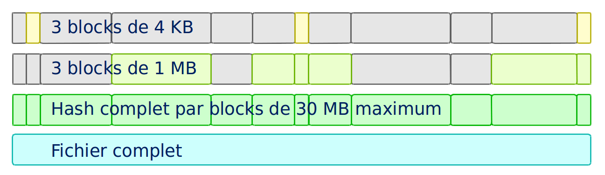

fim initFim
File Integrity Manager 1.2.3

* Nouvelle icône proposée par Raiden
Etienne Vrignaud
A quoi sert Fim
Avec Fim vous pouvez :
Vérifier l’intégrité de fichiers qui peuvent être gros et binaires,
donc non comparables (.doc, .jpg, .png, .mp3, .mp4, …)Connaître rapidement la liste fichiers qui auraient été
renommés, déplacés, effacés ou corrompus.
Cela peut arriver accidentellementConserver un journal des modifications pour ces fichiers et afficher par la suite une log détaillée de ces modifications
Rechercher les fichiers dupliqués et éventuellement les effacer ensuite
Plus de détails dans les cas d’utilisation à suivre…
Pourquoi j’ai écrit Fim
Un outil comme Git est capable de gérer des gros fichiers binaires
Mais avec Git le workspace local occupe au minimum le double de place car il y a tout le contenu du repository dans le .git
Et avec Git on ne peut pas supprimer définitivement un fichier.
Il sera toujours présent dans l’historique de GitDe plus tous les contenus des fichiers modifiés sont conservés.
Ce qui prend une place énorme à la longueCertains outils ne fonctionnent que sur des systèmes de fichier particuliers (Exemple: btrfs-scrub)
Le but était d’avoir un outil qui puisse afficher rapidement le statut du workspace local
Comment ça fonctionne
Fim crée le répertoire .fim à la racine du workspace. C’est son référentiel.
Dedans il stocke un index des fichiers contenus dans le workspace.
L’index contient pour chaque fichier :
— Nom et taille
— Attributs (dates, permissions)
— Hash de 3 petits blocks
— Hash de 3 blocks moyens
— Hash complet du fichier
L’index s’appelle le State et les hash sont fait avec du SHA-512
Un nouveau State est créé à chaque commit
Les données des fichiers ne sont pas conservées. On peut donc mettre Fim dans la catégorie des UVCS (UnVersioned Control System)
Fim workflow
1/ Créer le repository Fim
2/ Travailler sur les fichiers, modifications
...
3/ Connaître l’état du workspace
fim st # Commande 'status'4/ Commiter pour sauvegarder l’état courant
fim ci -m "My commit comment"5/ Afficher l’historique
fim logDifférents mode de hash
Pour obtenir un status plus rapide, Fim est capable de hasher seulement 3 blocks du fichier
au début, au milieu et à la fin.
On peut utiliser les options :
-f: Mode fast. Hash 3 blocks de 1 MB-s: Mode super-fast. Hash 3 blocks de 4 KB
fim st -ffim st -sAvec l’option -n (pas de hash) Fim regarde juste les noms de fichiers et les attributs
fim st -n
mkdir test1
$ cd test1
$ for i in 01 02 03 04 05 06 07 08 09 10 ;
do echo "New File $i" > file${i} ; done
$ fim init -m "First State"
# Modifications
$ fim st
$ fim ci -m "My modifications"
$ fim logDifférents cas d’utilisation
Cas 1 - Gestion d’un workspace
Cas 2 - Détection et effacement des doublons d’un workspace
Cas 3 - Fichiers dupliqués d’un autre workspace
Cas 4 - Intégrité d’un backup
Cas 1 - Gestion d’un workspace
Gestion de répertoires remplis de binaires.
Par exemple : photos, musique ou filmsConnaître l’état d’un workspace dans lequel on travail épisodiquement
Suivre les évolutions au fil du temps
fim stModifications effectuées
fim ci -m "My commit comment"
Fim ne sauvegarde pas les contenus.
Il est recommandé de vous munir d’un logiciel de sauvegarde
Cas 1 - Super-fast commit
Le mode super-fast durant un commit permet de vérifier l’état courant en mode super-fast
pour que le commit soit plus rapide.
Les fichiers modifiés sont alors hashés a nouveau en mode complet
fim ci -s -y -m "Commit very quickly using super-fast commit"
Cas 1 - Exécuter les commandes Fim à partir d’un sous-répertoire
Certaines commandes sont plus rapides quand elles sont exécutées depuis un sous-répertoire, car elles ont moins de fichiers à traiter :
st(status) : Connaître l’état du sous-répertoireci(commit) : Commiter les modificationsfdup(find-duplicates) : Trouver les fichiers dupliquésrdup(remove-duplicates) : Effacer les fichiers dupliquésrfa(reset-file-attrs) : Réinitialiser les attributs des fichiers
Toutes les autres commandes fonctionnent, mais pas plus rapidement
Cas 1 - Ignorer des fichiers ou répertoires
Vous pouvez ajouter un fichier .fimignore a tous les niveaux du repository,
et aussi globalement dans le Home de l’utilisateur
Chaque ligne du fichier contient un nom de fichier ou de répertoire à ignorer. Vous pouvez aussi utiliser les expressions suivantes :
Un astérisque pour ignorer plusieurs (Exemple :
*.mp3)**/en début de ligne. Le reste sera ignoré dans tous les sous répertoires. Par exemple pour ignorer tous les mp3 même ceux qui sont dans des sous répertoires :**/*.mp3
Cas 1 - Ignorer certaines modifications
Limiter l’affichage avec -i pour ignorer les modifications sur :
attrs: Attributs des fichiersdates: Dates de modification et de créationrenamed: Fichiers renommés
fim st -i attrs,dates,renamedPour ignorer tous les types, indiquer all
fim st -i allCas 1 - Gestion des permissions
Il est important de s’assurer que les fichiers conservent leurs permissions.
Fim les sauvegarde et est capable de les restaurer.
Il stocke pour chaque fichier les informations suivantes :
Vous pouvez restaurer les permissions à l’aide la commande
rfa (reset-file-attrs) :
fim rfaCas 2 - Détection des doublons d’un workspace
Fim est capable d’afficher les doublons contenus dans un workspace à l’aide de la commande fdup (find-duplicates) :
fim fdupSi l’état courant est déjà commité, vous pouvez éviter la phase de scan du workspace à l’aide de l’option -l :
fim fdup -l
Cas 2 - Effacement des doublons d’un workspace
Il est possible d’effacer les fichiers dupliqués.
• Soit en interactif :
fim rdup• Ou en automatique en conservant le premier fichier de la liste des fichiers dupliqués :
fim rdup -yDans les deux cas, il est possible d’utiliser l’état courant comme avec fdup en ajoutant l’option -l :
fim rdup -lCas 3 - Fichiers dupliqués d’un autre workspace
Fim peut effacer les fichiers en double contenu dans un autre workspace.
Par exemple un vieux backup désynchronisé où vous voulez conserver uniquement les fichiers que vous n’avez pas.
Il efface localement tous les fichiers déjà présents dans le workspace master.
Par exemple, avec backup qui est une copie du repository nommé source :
cd backup
$ fim rdup -M ../sourceQuand le workspace à nettoyer est distant, vous pouvez juste copier le .fim dans un répertoire vide
et le mettre en paramètre de l’option -M de la commande rdup
Cas 4 - Intégrité d’un backup
Fim permet de vérifier l’intégrité des fichiers stockés sur tout type de système de fichiers. Notamment les backups offlines.
Pour cela il faut ajouter dans le backup le référentiel Fim (.fim) qui correspond
Il sera possible par la suite, de vérifier avec Fim l’intégrité des données du backup
Par exemple, dans le cas d’un DVD qui contient un backup et le référentiel Fim, vous pouvez aller à la racine et obtenir le statut :
fim stCas 4 - Détection de corruption matérielle

Fim diagnostique une corruption matérielle si le contenu du fichier a changé alors que les dates de création / modification n’ont pas été modifiées
On utilise la commande dcor (detect-corruption) :
fim dcor
rfa
Les autres commandes
dign(display-ignored) :
Affiche les fichiers ou répertoires ignorés dans le dernier Staterbk(rollback) :
Supprime le dernier State commitépst(purge-states) :
Purge les vieux State. Conserve uniquement le dernier
Comment utiliser Fim
Vous pouvez télécharger une distribution de Fim
 Dernière release
Dernière releaseOu construire une version depuis le master (Détails)
Prérequis pour Fim
Fim est écrit en Java. Il a besoin de Java 8
Il fonctionne sur Linux, Windows et Mac OS X
Il est testé sur ces trois plateformes
Image Docker de Fim
Pour Linux, si vous n’avez pas Java ou pas la bonne version,
une image Docker est disponible sur Docker Hub


• Récupérer le script fim-docker 
curl https://raw.githubusercontent.com/evrignaud/fim/master/fim-docker -L -o fim-docker && chmod a+rx fim-docker• Lancer Fim
Le script récupère l’image docker de Fim, puis la démarre.
Il prend les mêmes arguments que la commande fim
./fim-docker -h• Mettre à jour l’image utilisée
docker pull evrignaud/fimEssais en tout genre

Idées pour essayer soi-même :
Contenu du .fim
Le répertoire
.fimcontient :Un fichier avec les settings du référentiel :
settings.jsonUn fichier pour chaque état (State). C’est un fichier json compressé
Le State
Il contient un hash global qui en assure l’intégrité.
Fim refuse d’utiliser un State modifiéLe contenu des State est normalisé et peut-être utilisé sur les différents OS pris en charge
Modification du mode de hachage par défaut
A la création du référentiel de Fim vous pouvez demander à ne pas utiliser certains hash. Cela permet d’avoir un repository où les commit seront plus rapides, mais il pourrait y avoir des collisions :
• -f : Mode de hash max. : fast. Après utilisable uniquement -f, -s ou -n
• -s : Mode de hash max. : super-fast. Après utilisable uniquement -s ou -n
• -n : Mode de hash max. : no-hash. Après utilisable uniquement -n
Exemple :
fim init -fAprès la commande status fonctionne par défaut avec le niveau 'fast'.
fim st # S'exécute en utilisant '-f'L’algorithme de Hash utilisé
L’algo de hash utilisé est le SHA-512
Le SHA-512 est 2 * plus lent que MD5. C’est un algo cryptographique.
Cela diminue les risques de collisionLa taille de la clé produite (512 bits / 64 octets) permet de minimiser les risques de collision sur les gros fichiers
Ce qui ralenti le plus c’est le disque
Quand le statut est vérifié en mode full, les 3 hash sont utilisés ce qui limite encore plus les risques de collision
Performances

Fim peut gérer au moins 1 million de fichiers
Hashage en multi-thread pour utiliser au mieux les ressources
Dans beaucoup de cas, les performances sont conditionnées par la vitesse du disque
Par défaut, le nombre de thread est dynamique et dépend du débit du disque
Option
-tpour modifier le nombre de threads utilisés (Détails)
Processus de hashage
Un Thread scanne le workspace et rempli la Queue des fichiers à Hasher
Plusieurs thread hashent chacun un fichier :
— Calcul de la taille et de l’emplacement du prochain block
— Map du block en mémoire en utilisant un FileChannel des NIO
— Hashage ou non par les 3 hasheurs qui produisent les 3 hash
a l’aide de MessageDigest
Ils recoivent les mêmes blocs afin de limiter les I/O
et donc lire une seul fois les blocks

Plus performant que certains programmes C++ ?
Purposely using btrfs RAID1 in degraded mode ?
https://www.spinics.net/lists/linux-btrfs/msg50990.html
For offline long term backups I also used to work with hashdeep to perform and store a hash of all the files and recently started playing with Fim which is similar but with a git backend for storing history. Don’t get fooled by fim being a java application.
It easily outperformed hashdeep on large datasets.
Les différentes versions de Fim
> Fim changelog <
Articles que j’ai écrit sur LinuxFr.org pour promouvoir Fim :
1.2.2 - Effacement des doublons et historique complet pour Fim 1.2.2
1.2.0 - Focus sur les performances avec Fim 1.2.0
Support des repository avec au moins 1 million de fichiers1.1.0 - Fim 1.1.0
Réécriture de l’algorithme de hachage pour hacher
un bloc au début, un au milieu et un à la fin1.0.2 - Sortie de Fim 1.0.2, qui vérifie l’intégrité de vos fichiers
Première version de Fim annoncée publiquement
Ils parlent de Fim
Korben - Vérifier l’intégrité de très nombreux fichiers
Fim est un outil vraiment excellent qui permet de gérer l’intégrité de nombreux fichiers …01net.com - Pour Linux - Pour Windows
... permet de vérifier l’intégrité de tous vos fichiers après les avoir manipulés en lots …Pirate Informatique n°26 page 41 - Vérifiez l’intégrité de vos fichiers
Si vous avez un paquet de fichiers à transférer, vous aimeriez sans doute être absolument sûr que les données n’ont pas été endommagées …linux-btrfs - Purposely using btrfs RAID1 in degraded mode ? ou ici
... Don’t get fooled by fim being a java application. It easily outperformed hashdeep on large datasets.Stack Overflow - Signing every file created in a folder
L’OpenSource
Fim a été mis en OpenSource pour qu’il profite à tous.
Cela permet aussi de bénéficier des idées de chacun.
Voici les idées et merge request qui ont été soumises :
N’hésitez pas à ouvrir des issues avec vos idées sur GitHub
Les alternatives à Fim
git-lfs - Git Large File Storage (LFS) replaces large files such as audio samples, videos, datasets, and graphics with text pointers inside Git
git-annex - Managing files with git, without checking the file contents into git
doc - Manage your files and documents
DIRT (DIRectory Tracker) - Another little Linux command line utility to track changed files in a directory tree.
MD5 Summer - Application for Windows 9x, NT, ME, 2000 and XP which generates and verifies md5 checksums
btrfs-scrub - Reads all data from the disk and verifies checksums
Ils n’ont pas le mode super-fast pour le statut ou le commit
Découverte du projet sur GitHub et des outils utilisés


Asciidoctor - Implémentation Ruby de AsciiDoc pour générer
la doc de Fim et les slides de cette présentation
Questions